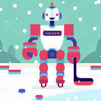

Fantasy AutoCoach has shut down.
Unfortunately, Yahoo no longer allows us the write access needed to set your lineups. Thank you for trusting us with your beloved fantasy teams over the years.

Good luck with your season!Unfortunately, Yahoo no longer allows us the write access needed to set your lineups. Thank you for trusting us with your beloved fantasy teams over the years.

Good luck with your season!